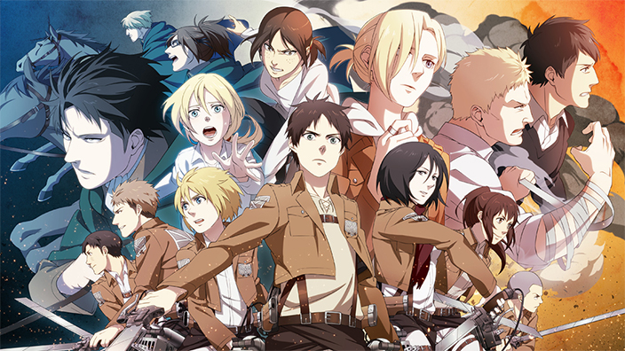
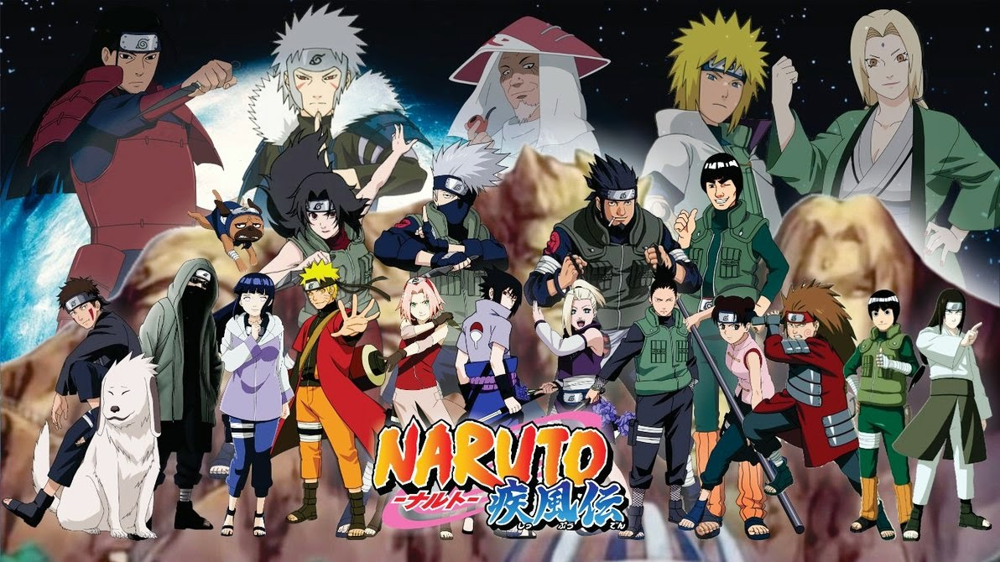
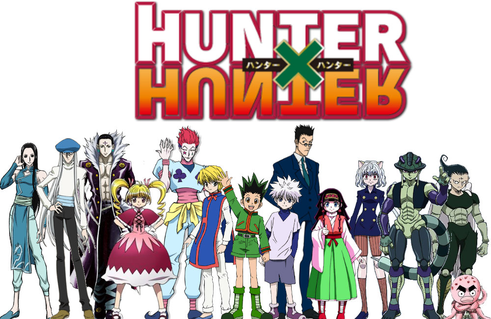
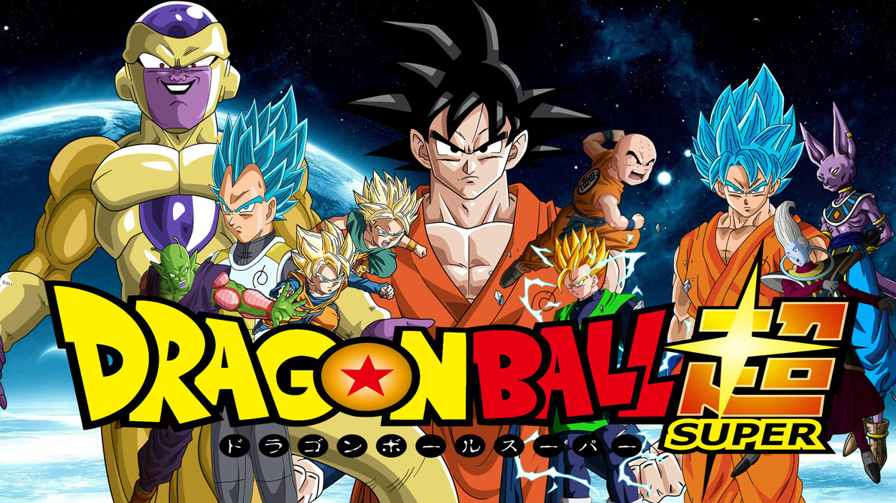

O mundo tem expressado cada vez mais interesse pelo Japão, principalmente a partir do século XIX, quando os animes e mangás ganharam holofote. Atualmente com mais de 430 estúdios de produção – nos quais podemos incluir nomes famosos como Toei Animation, Studio Ghibli e Madhouse – é uma indústria de sucesso internacional graças, principalmente, a internet e sua legião de fãs que aceleraram o consumo desta mídia em todo o planeta.
Shingeki no kyojin!

Os titãs que Hanji chamou de Sawney e Bean se referem ao nome do infame canibal Sawney Bean.(Alexander "Sawney" Bean era o chefe de um clã de 48 membros que teria vivido entre os séculos XV e XVI na Escócia e a quem é atribuído o assassinato em massa e a canibalização de mais de 1.000 pessoas.)
O nome de Mikasa foi tirado de um navio de guerra da Marinha Imperial Japonesa chamado Mikasa, já que Hajime Isaya acreditava que séries com personagens femininas nomeadas em homenagem a navios de guerra tinham a possibilidade de ter sucesso... ele estava certo!
O sonho de Eren de ir para fora do muro se assemelha ao desejo de infância de Hajime Isayama , ele cresceu em uma aldeia cercada por montanhas. Além disso, na série, as áreas em torno do muro são inspiradas na aldeia de Isayama.
No episódio de 'Treehouse of Horror XXIV' de Os Simpsons, Lisa Simpson estava vestida como Mikasa e tinha o Equipamento de Manobra 3D.
Naruto Shippuden

Naruto é um dos mangás infanto-juvenis mais populares nos últimos anos no planeta. Além do mangá ser vendido em 35 países fora do Japão; em setembro de 2014, o mangá teve mais de 200 milhões de cópias impressas, sendo mais de 130 milhões de cópias no Japão e os 70 milhões restantes no exterior, tornando-se a terceira série de mangá mais vendida da história.
Talvez você não saiba, mas existe uma cidade japonesa, com o nome da série! A cidade tem uma área 135.45 Km e tem uma população de 64.257 habitantes. A cidade Naruto, em Tokushima, é conhecida pelas banheiras de hidromassagens que são o destaque do local. Um fato interessante é que hidromassagem em japonês é "uzumaki".
Ele é um restaurante que serve apenas lamen. O comércio fica na frente da Universidade de Kyushu, onde o autor da série, Masashi Kishimoto, estudou. Ele frequentava muito o Ichiraku, ao qual ainda presta homenagem.
Sakura Haruno é o personagem de apoio mais odiado da série. Segundo estudos e análise em votações realizadas no Japão, Sakura Haruno ficou em primeiro lugar na categoria personagens irritantes
Hunter x Hunter

Meruen mesmo depois de se alimentar de pouf e yupi ainda era uma criatura de rank B , deixando em aberto a aparição de criaturas muito superiores a ele, a mudança drástica em sua personalidade deve-se ao seu amor pela komugi , mesmo ele agindo de forma bem fria no começo esse sentimento existe desde que ela o venceu pela primeira vez
Hisoka sempre foi um prodigio desde que aprendeu o nen dominando suas bases em apenas uma semana, Sua habilidade textura surpresa, foi uma adaptação de uma habilidade de seu professor de nen , a quem hisoka matou antes de partir de sua terra natal. Foi a mãe de hisoka que o ensinou seus truques com cartas, não se sabem oque ela era mas segundo hisoka " digamos que minha mãe era alguem bem capaz "
Netero , alem de presidente da associação hunter e um dos mais fortes do mundo , tambem é o mais velho com 116 anos de idade
o quarto onde gon entra para pegar a utima carta para completar o jogo greed island , foi feito pelo togachi para ser o mais parecido possível com o dele mesmo.
Dragon Ball Super!

Quem é fã do filho primogênito de Goku e ficou decepcionado com o rumo que o personagem tomou no fim da fase Z tem motivos para se empolgar: em Dragon Ball Super, depois de uma luta difícil contra Freeza, Gohan percebeu que não pode se focar só nos estudos e precisa continuar treinando para proteger a Terra caso seu pai não esteja por perto.
Extremamente popular entre os fãs, Vegeta nunca teve os holofotes que merecia durante a fase Z, mas isso foi mudando ao longo do tempo, principalmente nos últimos dois filmes. Em DB Super, o Príncipe do Saiyajins ganhou um bom arco que gira em torno de sua relação com Bulma e o aumento de seu poder.
Também no primeiro episódio, quando Son Goten fala sobre o Rei Cutelo e ele aparece, pode ser observada na parede a escultura de um touro com a frase: que significa mais ou menos "o embaixador da boa vontade do bife". O que significa uma brincadeira como o nome do Rei Cutelo, que no original é algo como rei touro ou rei boi.
As vozes clássicas conhecidas em Dragon Ball Z estarão de volta, assim como a direção de Wendel Bezerra, dublador do Goku que comandou os oito primeiros episódios. Wellington Lima, a voz de Majin Boo, também está dirigindo alguns capítulos.